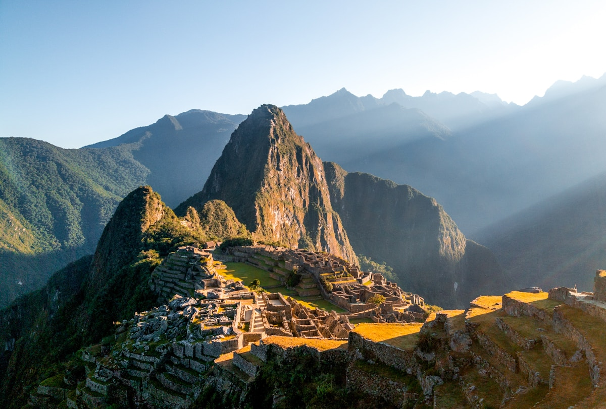
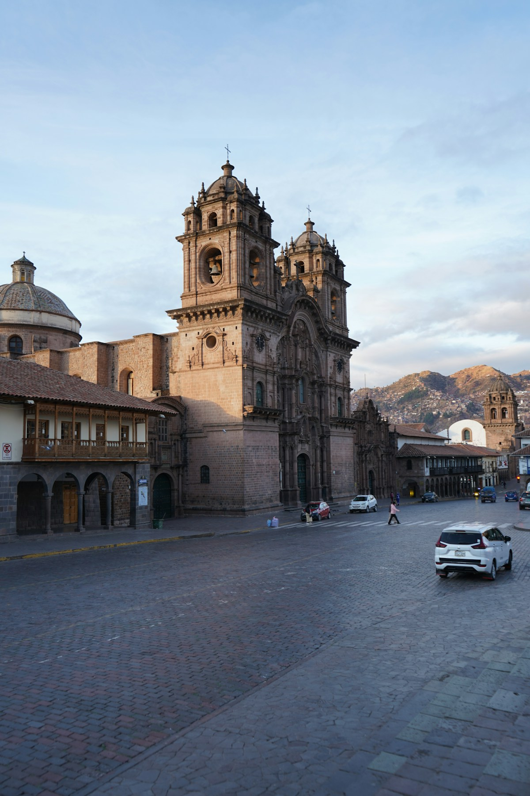
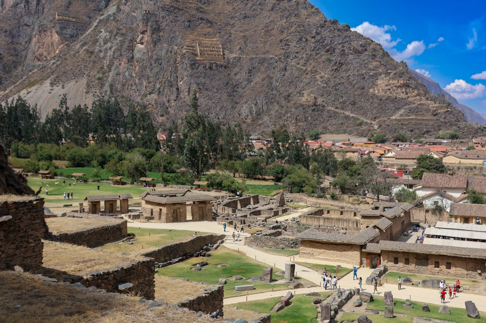
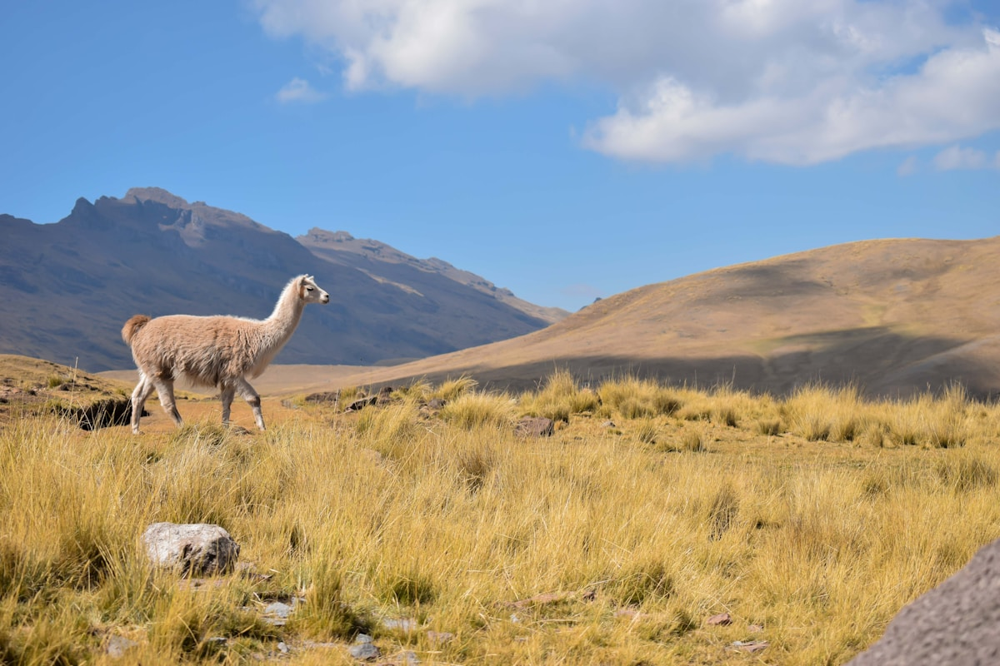
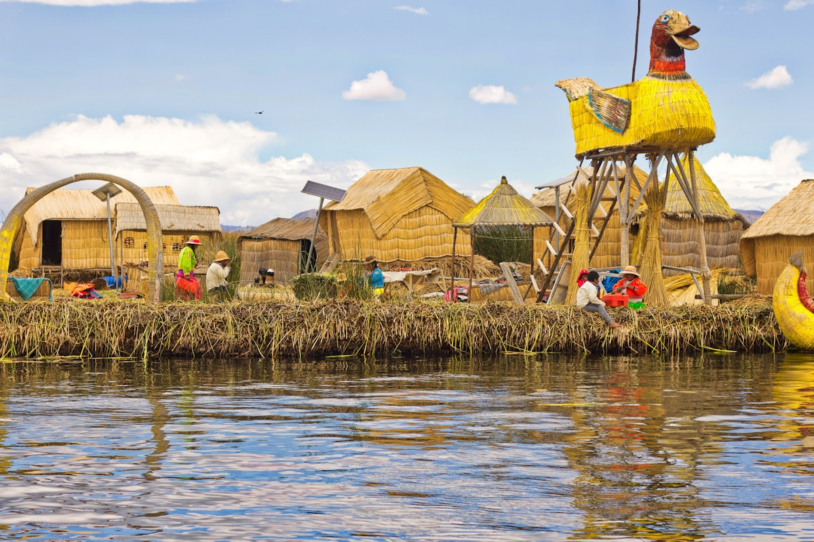
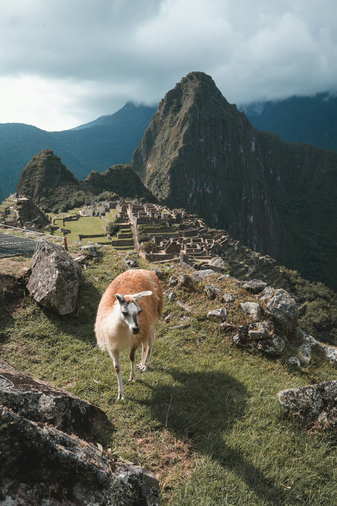
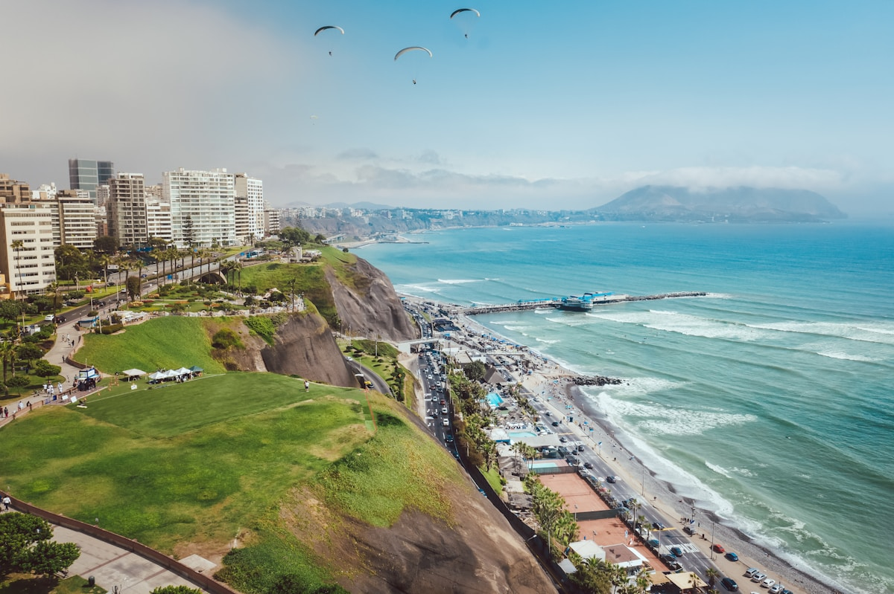
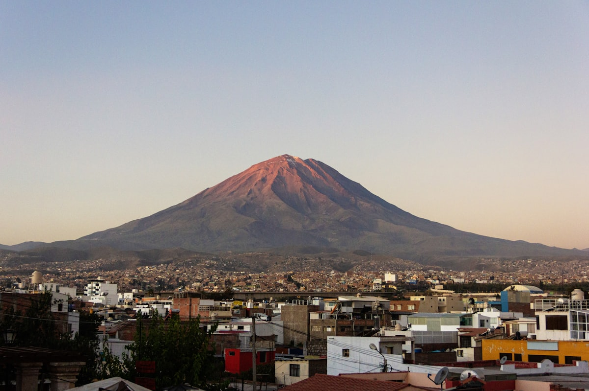

| 事项 | 结论 |
|---|---|
| 事项 | 结论 |
| 签证（最关键） | 持美/加/英/澳/申根有效签证或永居（剩期 6 个月以上）可免签入境 180 天；否则须办秘鲁签证，入境需返程机票备查 |
| 推荐方案 | 利马 2 天 + 库斯科&圣谷 3 天 + 马丘比丘 2 天 + 普诺&的的喀喀湖 2 天 + 阿雷基帕 1 天 |
| 返程约束 | 阿雷基帕✈利马衔接返程，国内段提前 1 个月订 |
| 行程链 | 利马 → 库斯科 → 圣谷 → 马丘比丘 → 普诺 → 阿雷基帕 → 利马 |
| 预算（人均） | 经济 15000–24000 ／ 标准 30000–45000 ／ 舒适 65000–95000（人民币） |
| 三件提前事 | ① 抢马丘比丘门票（tuboleto.cultura.pe，提前 1–4 个月）② 订欧雁台—热水镇观景火车 ③ 高原适应：库斯科 3400m |
| 季节提醒 | 5–10 月旱季晴好最佳；11–4 月雨季马丘比丘多雾但人少 |
| 支付 | 秘鲁索尔 + 美元通用；门票/火车需国际信用卡 |
以下为 12 天 11 晚的推荐节奏：利马老城打底，飞库斯科后沿圣谷一路向马丘比丘推进，再南下普诺的的喀喀湖，最后阿雷基帕收官。库斯科—普诺、普诺—阿雷基帕段乘大巴，其余为飞机+火车。每日主景点 ≤2 个。
| 日期 | 行程 | 过夜地 | 主题 |
|---|---|---|---|
| D1 抵利马 | 北京✈利马（转机约 21h），入住米拉弗洛雷斯海滨区，看太平洋日落 | 利马 | 抵达+倒时差 |
| D2 | 武器广场+圣弗朗西斯科修道院地下墓穴+拉尔科博物馆 | 利马 | 殖民老城 |
| D3 | 利马✈库斯科（1.5h，3400m），下午适应：武器广场+太阳神殿 | 库斯科 | 飞高原 |
| D4 | 圣谷西线：钦切罗 → 莫雷梯田 → 马拉斯盐田 → 欧雁台遗址 | 库斯科 | 圣谷日 |
| D5 | 圣谷东线：皮萨克遗址+集市 → 萨克塞华曼巨石墙 | 库斯科 | 印加日 |
| D6 | 欧雁台→观景火车（3.5h）→热水镇→马丘比丘下午场 | 热水镇 | 进天空之城 |
| D7 | 马丘比丘清晨场+（可选）华纳比丘 → 午后火车回库斯科 | 库斯科 | 马丘比丘日 |
| D8 | 库斯科→普诺（Cama 大巴 7h，翻越 4335m 山口），湖畔日落 | 普诺 | 高原转场 |
| D9 | 的的喀喀湖全日：乌鲁斯芦苇浮岛+塔奇勒岛（含午餐） | 普诺 | 圣湖日 |
| D10 | 普诺→阿雷基帕（大巴 6h），白色之城武器广场夜景 | 阿雷基帕 | 白色之城 |
| D11 | 圣卡塔利娜修道院+安第斯圣殿博物馆（木乃伊）→ 晚飞利马 | 利马 | 修道院日 |
| D12 返程 | 利马✈北京（转机约 21h），到家 | — | 收尾 |
以下为 12 天全程的逐小时执行时间线，可当作「当天打开照着走」的清单。标注 ※ 的可选项视体力与天气取舍。
| 时间 | 事项 |
|---|---|
| 14:00–22:00（北京时间） | 北京✈利马：无直飞，经欧洲/北美/南美中转，全程约 21h |
| 当地 12:00–14:00 | 抵豪尔赫·查韦斯国际机场（LIM），官方出租车/网约车进市区 |
| 15:00–17:00 | 入住米拉弗洛雷斯（Miraflores）海滨区，海边悬崖步道散步 |
| 18:00–20:00 | 晚餐：酸橘汁腌鱼（ceviche）+皮斯科酸酒，看太平洋日落 |
| 时间 | 事项 |
|---|---|
| 09:00–11:00 | 武器广场（Plaza Mayor）（免费）：总统府、大教堂、市政厅；10:00 前后可看总统府卫兵换岗 |
| 11:00–12:30 | 圣弗朗西斯科修道院（成人约 15 索尔）：地下墓穴（约 25000 具骸骨）+殖民图书馆 |
| 12:30–13:30 | 午餐：中国城（Barrio Chino）或老城街边反乔汤 |
| 14:00–16:30 | 拉尔科博物馆（Museo Larco）（成人 35 索尔）：前哥伦布金器+彩陶，南美最佳博物馆之一 |
| 17:00–18:30 | 返米拉弗洛雷斯，爱情公园（Parque del Amor）看太平洋落日 |
| 时间 | 事项 |
|---|---|
| 07:30–09:30 | 利马✈库斯科（约 1.5h，LATAM/Avianca，单程 80–250 美元，提前 6–8 周订最便宜） |
| 10:00–12:00 | 入住库斯科老城，高原适应第一课：放慢脚步，酒店供古柯茶 |
| 12:00–13:30 | 午餐：库斯科家常菜（烤豚鼠 cuy 是当地特色，可选尝） |
| 14:00–16:00 | 武器广场（Plaza de Armas）（免费）：大教堂+耶稣会教堂，印加石基之上的西班牙拱廊 |
| 16:00–17:30 | 太阳神殿（Qorikancha）（约 15 索尔）：印加黄金神庙遗址 |
| 时间 | 事项 |
|---|---|
| 08:00–09:00 | 库斯科包车/拼团出发圣谷（包车约 60–90 美元/天） |
| 09:00–10:30 | 钦切罗（Chinchero）（布oleto 通用）：印加梯田+手织工坊，周日市集最热闹 |
| 10:30–12:00 | 莫雷梯田（Moray）（布oleto 通用）：同心圆实验梯田，温差达 20°C 的「农业温室」 |
| 12:00–13:30 | 马拉斯盐田（Maras）（10 索尔）：3000+ 盐池沿坡而下，印加沿用至今 |
| 13:30–15:00 | 午餐：欧雁台小镇 |
| 15:00–17:30 | 欧雁台遗址（Ollantaytambo）（布oleto 通用）：圣谷最大印加要塞+太阳神庙巨石墙 |
| 时间 | 事项 |
|---|---|
| 08:00–09:00 | 圣谷包车第二天：库斯科→皮萨克（30km） |
| 09:00–11:30 | 皮萨克遗址（Pisac）（布oleto 通用）：山顶太阳神庙+梯田，俯瞰乌鲁班巴河谷 |
| 11:30–13:00 | 皮萨克集市（周二/四/日最热闹）：羊驼毛围巾、银饰、手工艺品 |
| 13:00–14:30 | 午餐：圣谷乡村餐厅 |
| 15:00–17:00 | 萨克塞华曼（Sacsayhuamán）（布oleto 通用）：库斯科上方巨型拼合石墙，每年 6 月太阳祭（Inti Raymi）主场地 |
| 18:00–19:30 | 返库斯科，武器广场夜景+晚餐 |
| 时间 | 事项 |
|---|---|
| 08:00–09:00 | 库斯科→欧雁台车站（1.5h），寄存大件行李（热水镇过夜轻装） |
| 09:30–13:00 | PeruRail/Inca Rail 观景列车（Expedition 单程约 80–120 美元，3.5h）：沿乌鲁班巴河谷蜿蜒，Vistadome 全景舱可选 |
| 13:00–14:30 | 抵热水镇（Aguas Calientes），入住+午餐 |
| 15:00–17:30 | 马丘比丘下午场（凭预约时段入场）：经典观景台全景+太阳祭石+拴日石 |
| 18:00–20:00 | 热水镇夜市晚餐，早睡 |
| 时间 | 事项 |
|---|---|
| 05:30–06:00 | 乘第一班接驳巴士上山（约 30 分钟） |
| 06:00–09:00 | 马丘比丘清晨场：晨雾中的天空之城+漫步羊驼+太阳祭石，光线最柔和 |
| 09:00–12:00 | 可选：华纳比丘/马丘比丘山（额外约 200 索尔，每日限 200–400 人，登顶俯瞰全景） |
| 12:00–13:30 | 下山午餐 |
| 14:00–17:30 | 火车返欧雁台→回库斯科（约 18:30 到） |
| 19:00–20:30 | 库斯科晚餐：烤豚鼠/羊驼排收官 |
| 时间 | 事项 |
|---|---|
| 07:00–08:00 | 退房，行李寄存车站 |
| 08:00–15:00 | 库斯科→普诺豪华大巴（Cruz del Sur Cama 床座约 45–70 美元，7h）：沿安第斯高原翻越 4335m 拉亚山口（La Raya），途中停靠观景点 |
| 15:00–16:30 | 入住普诺（3812m），湖畔集市（浮岛手工艺品） |
| 17:00–18:30 | 码头看日落，晚餐鳟鱼 |
| 时间 | 事项 |
|---|---|
| 07:00–08:00 | 普诺码头集合，报名全日游（约 40–70 美元，含船、向导、午餐与门票） |
| 08:00–10:00 | 乌鲁斯浮岛（Uros）：芦苇编织的漂浮岛，居民以芦苇为生（芦苇船体验约 15 索尔，自愿） |
| 10:00–13:00 | 快艇至塔奇勒岛（Taquile）（35km）：UNESCO 纺织文化，当地人家午餐（鳟鱼/藜麦汤） |
| 13:00–15:30 | 塔奇勒岛徒步：全岛最高点远眺安第斯雪山，500 级台阶下岛 |
| 15:30–17:00 | 返普诺，晚餐 |
| 时间 | 事项 |
|---|---|
| 07:00–13:00 | 普诺→阿雷基帕大巴（约 6h，经济座 25–40 美元） |
| 13:00–14:30 | 入住阿雷基帕历史中心（2335m，海拔反而低些） |
| 15:00–17:30 | 武器广场（Plaza de Armas）（免费）：白色火山石（sillar）大教堂+米斯蒂火山背景 |
| 18:00–20:00 | 晚餐：阿雷基帕老城地窖餐厅，尝 rocoto relleno（辣椒酿） |
| 时间 | 事项 |
|---|---|
| 09:00–11:30 | 圣卡塔利娜修道院（Monasterio de Santa Catalina）（成人约 40 索尔）：16 世纪红色修道院迷宫，像一座彩色小城 |
| 11:30–13:00 | 安第斯圣殿博物馆（Museo Santuarios Andinos）（约 25 索尔）：冰冻少女胡安妮塔木乃伊 |
| 13:00–14:30 | 午餐：阿雷基帕名菜 adobo |
| 15:00–16:30 | 可选：观景台远眺米斯蒂/查查尼火山 |
| 17:30–19:00 | 阿雷基帕✈利马（约 1.5h） |
| 时间 | 事项 |
|---|---|
| 09:00–11:00 | 米拉弗洛雷斯自由活动：海边晨跑/早餐 café |
| 11:30–13:00 | 退房，前往机场（预留 2h，利马出城堵车） |
| 13:00–次日 | 利马✈北京（转机约 21h），到家 |
必去（必去）/ 顺路（顺路）/ 可跳过（可跳过）。

必去
必去
顺路
必去
顺路
必去
顺路图片为 Unsplash 主题图（马丘比丘、库斯科、圣谷梯田、羊驼、的的喀喀湖浮岛、华纳比丘、利马海岸、阿雷基帕等均为秘鲁实景），用于页面配图。更多免费看点：库斯科萨克塞华曼、利马爱情公园、阿雷基帕武器广场。
点击左侧节点可在地图上定位；点击地图 marker 会高亮对应节点。坐标为 WGS-84 转 GCJ-02 纠偏后标注。
以下为单人、不含购物的估算，人民币计价；出发地基准北京。汇率按 1 元人民币 ≈ 0.53 秘鲁索尔（1 索尔 ≈ 1.9 元）。往返机票按淡季 7000–12000 元计，马丘比丘门票 152–200 索尔 + 往返观景火车约 160–240 美元是固定大头。
| 项目 | 经济（15000–24000） | 标准（30000–45000） | 舒适（65000–95000） |
|---|---|---|---|
| 往返机票 | 北京⇄利马 7000–10000 | 含南美联程 12000–16000 | 宽体舱+灵活转机 20000–28000 |
| 住宿（11 晚） | 青旅/民宿 150–300/晚 | 三至四星 350–700/晚 | 精品酒店 1200–2500/晚 |
| 境内交通 | 利马-库斯科廉航+Cama 大巴 2500–3500 | 正价航班+Cama 大巴 4000–6000 | 含包车/私人火车舱 8000–12000 |
| 门票 | 马丘比丘+布oleto 1500–2500 | 含华纳比丘+博物馆 3000–5000 | 全含+私人向导 6000–9000 |
| 餐饮（12 天） | 市场+快餐 1300–2200 | 正常下馆子 2800–5000 | 美食之都高端餐厅 8000–13000 |
经典印加古道（Inca Trail）4 天替代火车进山，需提前 3–6 个月抢许可（旺季每日限 500 人），门票含古道套餐。体力要求高，最高海拔 4200m；旺季 5–9 月。
阿雷基帕多留 1 天去科尔卡峡谷（世界第二深峡谷，清晨看安第斯秃鹫盘旋）；普诺可选 2 天 1 夜民宿版（夜宿塔奇勒岛，与当地家庭同吃同住，体验更沉浸）。
| 方式 | 时长 | 参考价 | 备注 |
|---|---|---|---|
| 国际航班 | 北京→利马 转机约 21–30h | 往返 7000–15000 元 | 无直飞，经欧洲/北美/南美中转 |
| 国内航班 | 利马—库斯科 1.5h；阿雷基帕—利马 1.5h | 单程 80–250 美元 | LATAM/Sky/Avianca，提前 6–8 周订 |
| 长途大巴 | 库斯科—普诺 7h；普诺—阿雷基帕 6h | 经济 25–40 美元 / Cama 45–70 美元 | Cruz del Sur/Civa，选 Cama 床座 |
| 观景火车 | 欧雁台—热水镇约 3.5h | 单程 80–160 美元 | PeruRail Expedition/Vistadome，旺季提前订 |
| 区域 | 价格/晚 | 优点 | 短板 |
|---|---|---|---|
| 利马·米拉弗洛雷斯 | 经济 200–400 / 标准 450–900 | 海滨安全，餐厅多 | 离老城远，打车 30 分钟 |
| 库斯科·老城 | 经济 250–500 / 标准 500–1000 | 武器广场步行圈，石板路风情 | 海拔 3400m，初到易喘 |
| 圣谷·欧雁台 | 经济 250–500 / 标准 500–1000 | 靠近火车站，气候比库斯科暖 | 设施偏乡村 |
| 热水镇（阿瓜斯卡连特斯） | 经济 250–600 / 标准 600–1200 | 去马丘比丘最近 | 住宿溢价，火车进出 |
| 普诺·湖畔 | 经济 150–300 / 标准 300–700 | 经济实惠，湖边日落 | 海拔 3812m，冷 |
| 阿雷基帕·历史中心 | 经济 200–400 / 标准 400–900 | 白色之城，广场周边 | 白天热，昼夜温差大 |